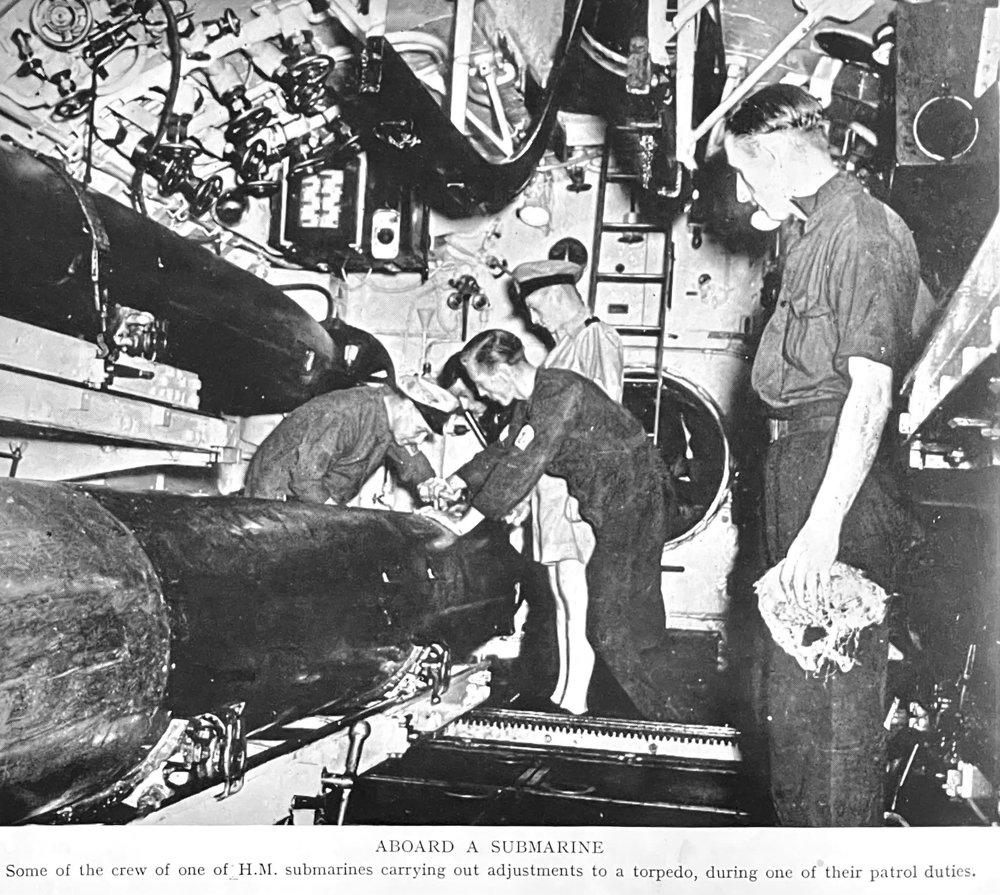
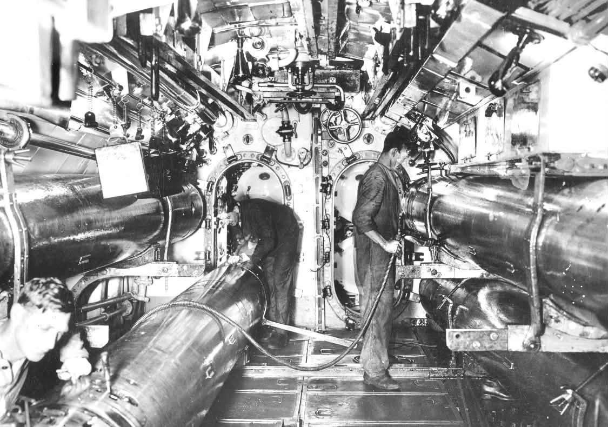
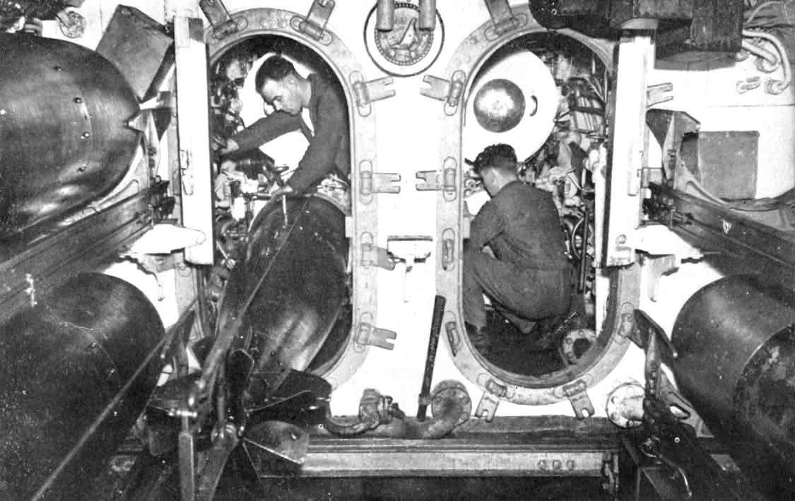
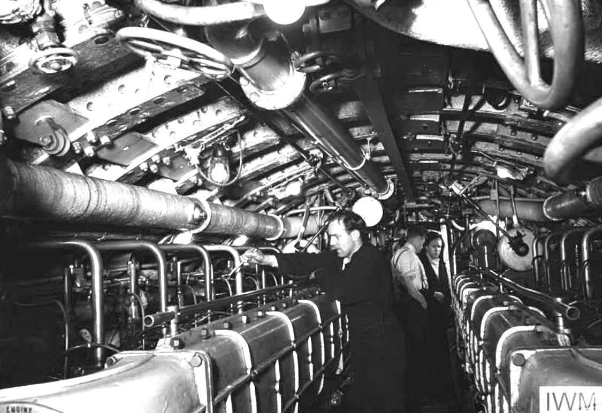
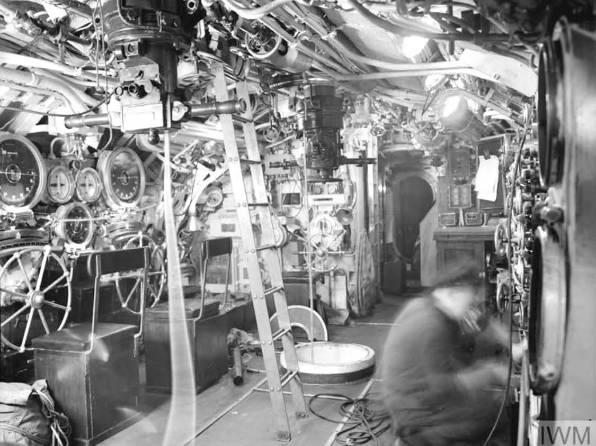
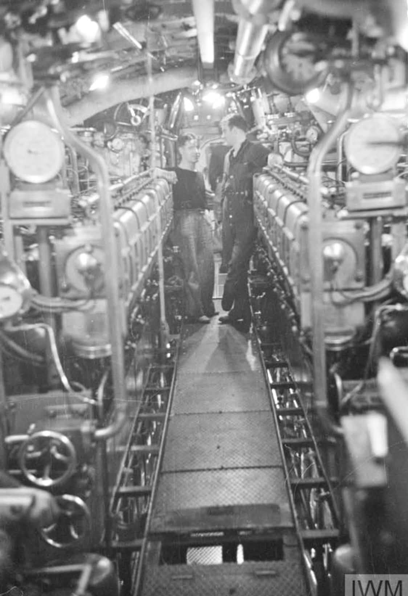
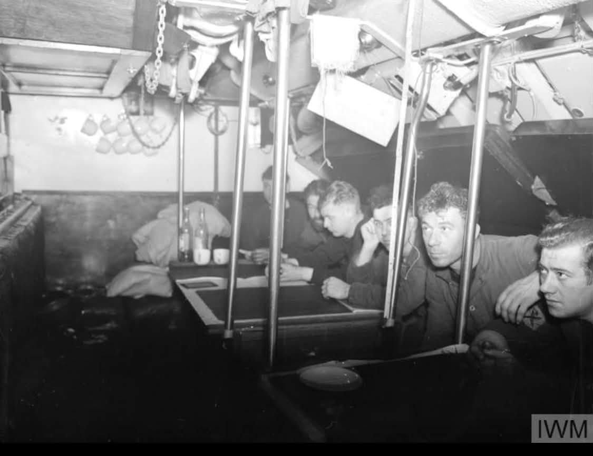
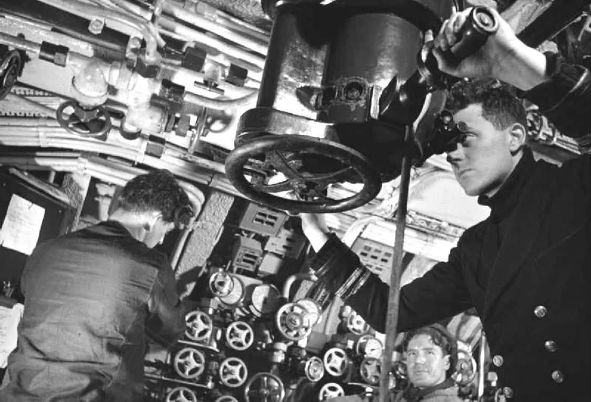
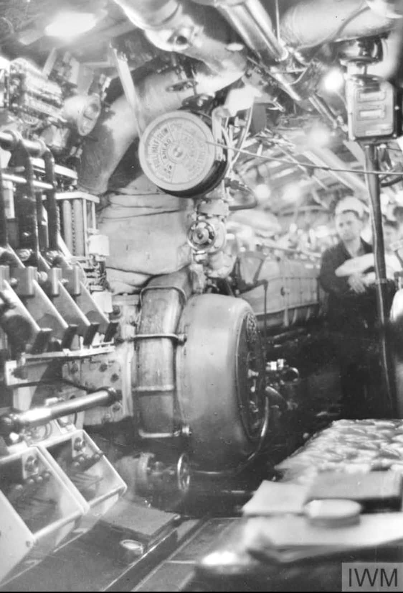
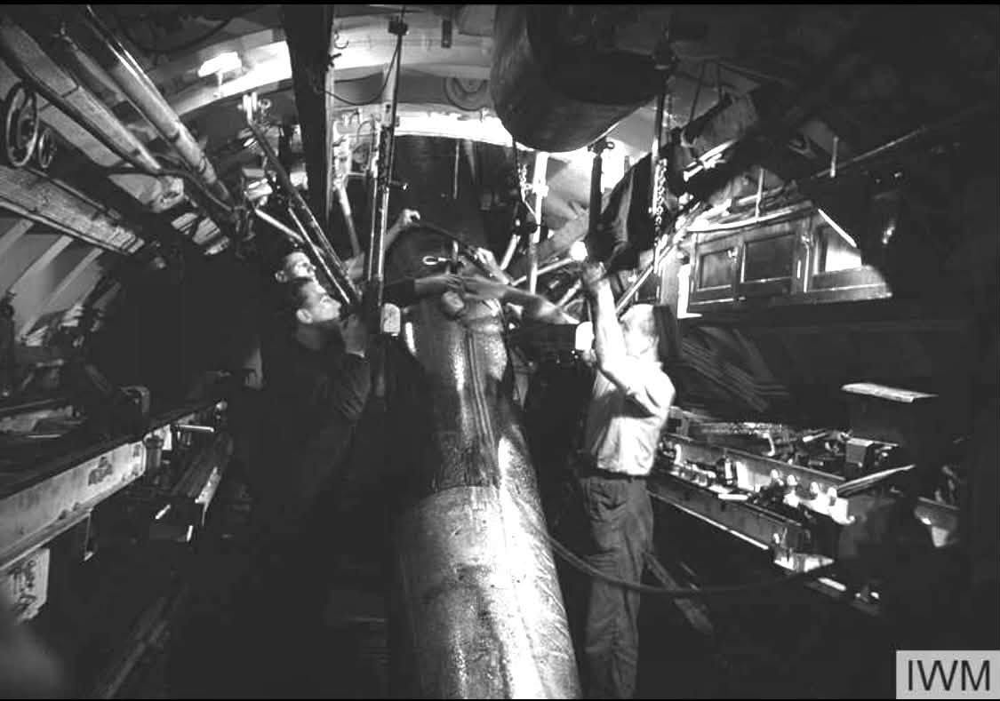

The following article was posted in the ‘Battleships, Battlecruisers and all other Warships 1860 to 1982’ Facebook Group on 22 August 2026. The photographs referenced in the article are reproduced at the end of the article, along with their captions. This article is reproduced on this site with the permission of the author.
INSIDE A BRITISH SUBMARINE, by Bengt Söderberg

Torpedoes, machinery and men in the Royal Navy’s wartime submarine service
The photograph headed “Aboard a Submarine” in Britain at War: The Royal Navy is at first sight an almost routine wartime picture. Several submariners in working clothes are gathered around a torpedo, while behind them the pressure hull seems almost covered by pipes, valves, wheels and machinery.
The original caption says only:
“Some of the crew of one of H.M. submarines carrying out adjustments to a torpedo, during one of their patrol duties.”
It does not name the submarine.
That omission was probably deliberate. Wartime Admiralty photographs frequently avoided information that might reveal the identity or whereabouts of an operational boat. It also means that, more than eighty years later, we must resist the temptation to identify the submarine merely from resemblance.
What we can identify with confidence is the world in which these men were working: the extraordinarily confined, mechanically complex and dangerous interior of a Royal Navy submarine at the beginning of the Second World War.
And fortunately another submarine, HMS Tribune (N76), allows us to explore that world in remarkable detail.
────────
The mysterious original photograph
The photograph appears to belong to the early-war period, probably around 1939–40, although I have not found an Admiralty record that conclusively establishes the precise date and submarine.
The men are working around what appears to be a standard British 21-inch (533 mm) submarine torpedo.
The weapon dominates the photograph. This is significant because the torpedo was not simply a projectile waiting to be loaded. It was a complicated mechanical machine in its own right. Its propulsion, gyro, depth-control mechanism and other systems required inspection and adjustment.
The men therefore appear to be doing exactly what the original caption claims: working on a torpedo rather than merely posing beside one.
But another feature of the photograph is equally important.
Almost nothing aboard the submarine is wasted space.
Above the torpedo are pipes. Behind the men are valves and wheels. Equipment occupies the bulkheads and overhead spaces. Men have to work in whatever volume remains.
That was fundamental to submarine design.
────────
The T-class – Britain’s large patrol submarine
Although the exact class shown in the original photograph cannot yet be established, the T-class provides an excellent comparison because it represented one of Britain’s most important large submarine designs at the outbreak of war.
The class originated from a requirement for a long-range patrol submarine capable of operating against enemy warships. British designers expected future anti-submarine detection to make close approaches increasingly difficult. A submarine might therefore obtain only one good opportunity to attack.
The answer was an exceptionally heavy torpedo salvo.
Early T-class submarines had six internal 21-inch torpedo tubes in the bow plus four external forward-firing tubes. The six internal tubes could be reloaded; six reload torpedoes were carried in the torpedo-stowage compartment. The external tubes could not be reloaded from inside the submarine. (Wikipedia)
A pre-war T-class could consequently fire as many as ten torpedoes forward in one salvo – extraordinary offensive power for a submarine of the period.
This armament had consequences for everything else aboard.
A substantial part of the submarine’s forward section existed to accommodate torpedoes and the men who operated them.
────────
HMS Tribune – our photographic guide
HMS Tribune is particularly useful because she was not a later derivative but an original Group I T-class submarine.
Built by Scotts at Greenock, she was laid down on 3 March 1937, launched on 8 December 1938 and commissioned on 17 October 1939. She displaced approximately 1,090 tons surfaced and 1,575 tons submerged and had a wartime complement of around 59 officers and men. (Wikipedia)
She therefore belonged to precisely the generation of British submarines we want to understand.
Even better, in July 1942 Royal Navy photographer Lieutenant L. C. Priest photographed her extensively at Scapa Flow.
No fewer than 60 photographs of Tribune’s interior survive in the collection, covering such spaces as the control room, seamen’s mess, wardroom and motor room. (Wikimedia Commons)
They provide an extraordinary photographic journey through a British wartime submarine.
────────
The torpedo – more machine than shell
The weapon in our original photograph deserves closer attention.
British submarines used several torpedo types during the war, but the 21-inch Mark VIII became particularly important. We should nevertheless avoid identifying the particular torpedo in the photograph as a Mark VIII without seeing distinguishing details.
A torpedo was fundamentally different from a naval shell.
Once a shell had left a gun barrel, it followed a ballistic trajectory. A torpedo had to propel itself through the water while maintaining the correct course and depth until reaching its target.
This required a propulsion system, steering machinery, depth control, a gyroscope and an explosive warhead with its associated pistol.
Every component had to work.
The torpedo also had to survive weeks inside a submarine operating in a damp, moving and mechanically hostile environment.
Hence the activity in the photograph.
The sailors are servicing the submarine’s principal offensive weapon.
────────
Loading more than a ton of machinery
A 21-inch torpedo weighed well over a ton. Moving one inside the narrow cylindrical pressure hull was therefore a formidable undertaking.
The T-class illustrates just how physical the process remained.
Its six internal bow tubes had six reloads. Reloading was principally manual. HMS Triumph was experimentally equipped with a powered loading arrangement in 1939, but the system proved underpowered and was not adopted generally. (Wikipedia)
The men were consequently part of the weapons system.
They needed machinery to assist them, but ultimately human strength, coordination and training were required to manoeuvre a long and extremely heavy torpedo into position.
A loose torpedo inside a submarine rolling in heavy seas would itself have represented a serious danger.
────────
The seamen’s mess – living among the weapons
One of the most revealing Tribune photographs shows the seamen’s mess. The identification is not speculation: the Admiralty photographic record itself describes IWM photograph A10911 as “The Seamen’s Mess”. (Wikimedia Commons)
The picture demonstrates one of the strangest aspects of submarine life.
There was no clear division between “ship” and “home”.
The submarine was both.
Men ate, slept and rested only a short distance from torpedoes, batteries, electrical equipment and machinery. Every available corner might contain clothing, food or equipment.
Privacy was virtually nonexistent.
Even comparatively large submarines such as the T-class were crowded once perhaps sixty men, their provisions, weapons and equipment had been squeezed inside.
Suggested caption
THE SEAMEN’S MESS – HMS TRIBUNE, JULY 1942
The ratings’ living accommodation aboard the T-class submarine HMS Tribune at Scapa Flow. Space was at a premium in every wartime submarine. Men ate, rested and slept within a pressure hull already crowded with weapons, machinery, stores and equipment. The photograph was taken by Royal Navy photographer Lt L. C. Priest.
────────
The control room – the submarine’s brain
The contrast between a modern submarine and Tribune’s control room is striking.
There were no digital screens and no computers.
Instead we see gauges, large wheels, electrical panels, switches, pipes and valves.
Here the submarine was controlled while submerged.
Depth and trim had constantly to be monitored. Hydroplanes controlled the submarine’s attitude through the water, while ballast and trimming systems determined its buoyancy.
When the order to dive came, numerous actions had to occur correctly and rapidly.
The submarine was therefore not controlled by one man pulling one lever. Diving was a coordinated team operation.
Suggested caption
THE CONTROL ROOM OF HMS TRIBUNE
The nerve centre of the T-class submarine. Wheels, gauges, valves and electrical controls surround the crew. From here the submarine’s depth, trim and underwater manoeuvres were controlled. The photograph demonstrates how dependent a wartime submarine remained upon the skill and coordination of its crew.
────────
Looking through the periscope
The periscope represented the commander’s narrow visual connection with the world above.
During a submerged attack the commander had to build a mental picture from brief observations.
Where was the target?
What was its course?
How fast was it travelling?
At what range?
A torpedo firing solution depended upon these estimates.
Yet every additional second with the periscope raised increased the danger of discovery. Under favourable conditions an escort might see the feather of water produced by a moving periscope.
A successful commander therefore tried to expose it only briefly.
The remarkable photographs from Tribune show just how closely the periscope position was integrated into the machinery and controls around it.
Suggested caption
AT THE PERISCOPE – HMS TRIBUNE, 1942
A submariner operates the periscope aboard HMS Tribune. The mass of valves and hand wheels surrounding the position illustrates the mechanical complexity of the control room. During an attack, observations through the periscope were deliberately kept brief to reduce the danger of detection.
────────
The wardroom – officers had little luxury either
Tribune’s wardroom was photographed at Scapa Flow in July 1942 and survives as another Admiralty image. ()
The term “wardroom” can be misleading to anyone familiar with battleships and cruisers.
There was no spacious officers’ dining room here.
The compartment was small and functional. Officers ate, worked and attempted to relax within a few feet of the submarine’s machinery and fighting systems.
The captain might have somewhat greater privacy, but nobody aboard a wartime submarine could truly escape the boat.
Noise travelled through the pressure hull.
So did smells.
So did heat.
────────
Diesel-electric propulsion – really a submersible warship
Understanding the machinery explains another important feature of wartime submarines.
A T-class was diesel-electric.
On the surface its diesel engines provided propulsion and allowed the batteries to be charged. Once the submarine dived, conventional diesel operation ceased and the boat depended upon electrical energy stored in large battery banks.
Electric motors then drove the propeller shafts.
This means that a Second World War submarine should not be imagined as a modern nuclear submarine capable of remaining submerged almost indefinitely.
It was, in many respects, a surface warship possessing the extraordinarily useful ability to disappear beneath the sea for limited periods.
Underwater endurance depended heavily upon speed. High submerged speed consumed battery capacity rapidly.
The commander was therefore constantly managing energy as well as tactical position.
────────
Inside the motor room
The Admiralty’s July 1942 photographic survey specifically identifies one of Tribune’s compartments as the motor room. ()
The photograph is particularly effective because machinery fills almost every available space.
When submerged, these motors represented mobility and survival.
But machinery also produced heat, required maintenance and occupied space that could otherwise have been used by the crew.
That compromise runs through virtually every aspect of submarine design.
Suggested caption
THE MOTOR ROOM – HMS TRIBUNE, SCAPA FLOW, 1942
The electric propulsion machinery of HMS Tribune. When the submarine dived, battery-powered electric motors replaced the diesel engines used on the surface. Submerged endurance depended upon the remaining battery charge, making economical speed and careful energy management essential.
────────
Heat, smells and stale air
Photographs cannot reproduce perhaps the most important aspect of submarine life: the atmosphere.
Imagine the original photograph again.
Around those men were diesel fuel, lubricating oil, machinery, electrical equipment, food, damp clothing and dozens of human beings.
Washing water was limited.
Fresh food gradually disappeared during a patrol.
Clothes could not simply be washed and dried as they could ashore.
Smoking was also common in this period, whenever circumstances permitted.
When submerged for long periods the air deteriorated progressively.
The remarkable cleanliness visible in many official photographs should therefore be interpreted carefully. Admiralty photographers were recording real submarines and real sailors, but the resulting pictures inevitably give a tidier impression than the experience of a prolonged operational patrol.
────────
Batteries – essential and dangerous
Beneath parts of the living accommodation were enormous lead-acid batteries.
These were the submarine’s underwater energy store.
Without them there was no submerged propulsion.
But they introduced dangers of their own. Batteries could generate hydrogen, and seawater contamination of damaged battery systems could produce extremely hazardous gases.
Flooding was consequently dangerous for reasons extending far beyond simple loss of buoyancy.
A submarine crew lived surrounded by systems capable of keeping them alive – and, if damaged or mishandled, killing them.
────────
HMS Thetis – a catastrophe the Submarine Service could not forget
This point was demonstrated tragically shortly before the war.
HMS Thetis, herself a new T-class submarine, was lost during diving trials on 1 June 1939 after water entered through a forward torpedo tube.
Ninety-nine men died.
The accident led to an important modification associated with the inner torpedo-tube doors: the famous “Thetis clip”, designed to prevent the door from being opened fully before it had been established that the tube was safe. The device subsequently became a standard safety feature. (Wikipedia)
The disaster is especially relevant to our original photograph.
If that photograph really belongs to the opening period of the war, these men were servicing torpedo equipment in a Submarine Service in which the loss of Thetis was an extremely recent memory.
For them, correct torpedo-tube procedure was quite literally a matter of life and death.
────────
The men mattered as much as the submarine
It is easy when studying naval warfare to concentrate upon technical figures:
1,090 tons.
15 knots.
21-inch torpedoes.
Six internal tubes.
Ten forward-firing tubes.
But the original photograph provides a useful corrective.
None of those figures mattered without trained men.
A submarine required torpedomen, engineers, electricians, signalmen, navigators, hydroplane operators, lookouts, cooks and officers who understood not merely their own jobs but how those jobs fitted into the operation of the entire boat.
The relatively small crew also encouraged a different social atmosphere from that aboard a battleship carrying more than a thousand men.
Everybody lived close together.
Everybody depended upon everybody else.
If something went badly wrong beneath the surface, there was no destroyer alongside to provide assistance and often no possibility of abandoning ship.
────────
Was the original submarine a T-class?
This is the question that must finally be addressed.
We cannot yet say that it was.
The large torpedo-working space, 21-inch weapon and general arrangement make comparison with the T-class very worthwhile. An early T-class remains an interesting possibility.
But other British submarine classes of the period also carried 21-inch torpedoes and possessed similarly crowded forward compartments.
Without an original Admiralty negative number, a contemporary caption naming the submarine, or an unmistakable class-specific structural feature, assigning a particular class would go beyond the evidence.
HMS Tribune should therefore be presented not as the submarine in the original photograph, but as something historically more useful:
a documented contemporary example showing us what life inside a large British T-class submarine actually looked like.
Her photographic record is exceptionally good. The surviving collection contains sixty interior images, many explicitly identified by compartment. (Wikimedia Commons)
────────
HMS Tribune herself
There is a satisfying conclusion to her story.
Commissioned on 17 October 1939, Tribune served in northern waters and later in the Mediterranean. Her recorded operations included attacks on German and Italian shipping. She survived a war in which many British submarines did not. ()
In 1943 she also acquired an unusual second career.
Tribune appeared in the British wartime film Close Quarters, portraying the fictional submarine HMS Tyrant. (Wikipedia)
She survived until the end of the war and was eventually sold for scrapping in 1947.
Thus the submarine whose interior provides our photographic guide was not a museum reconstruction.
She was an operational fighting submarine.
────────
What the photograph really shows
We can now return to the men in the original Britain at War photograph.
One bends over the torpedo.
Another assists him.
A third watches.
Around them are valves, pipes, machinery and steel.
Seen in isolation, it is simply a picture of sailors making adjustments to a weapon.
Placed alongside the photographs of HMS Tribune, however, its significance changes.
The torpedo was connected conceptually to everything else aboard the submarine. Diesel engines carried the boat toward its patrol area. Batteries and electric motors allowed it to approach underwater. Hydroplanes and ballast systems controlled its depth. The periscope provided the commander with fleeting glimpses of his target. The control-room team calculated and manoeuvred.
Finally the torpedomen prepared the weapon.
All these systems were packed into a steel pressure hull only a few metres across, together with the men who had to eat, sleep and live there for weeks at a time.
That perhaps explains why this apparently ordinary photograph is so compelling.
It shows men not merely operating a weapon of war, but effectively living inside it.
ABOARD A BRITISH SUBMARINE – TORPEDO MAINTENANCE
Royal Navy submariners carry out adjustments to a 21-inch torpedo in the forward section of an unidentified British submarine. The photograph vividly illustrates the cramped working conditions aboard an early-war boat: torpedoes, pipework, valves and equipment occupy almost every available space. The exact submarine has not been established, although the arrangement is consistent with the larger British patrol submarines of the period. The photograph probably dates from the opening period of the Second World War.

THE FORWARD TORPEDO COMPARTMENT
A striking view along the torpedo compartment of a British submarine, showing several 21-inch torpedoes secured in their stowage positions. A further torpedo is being handled along the centreline while members of the crew work around it. The photograph demonstrates the enormous amount of internal space consumed by a submarine’s principal weapons and the very limited room left in which the torpedomen had to manoeuvre weapons weighing well over a ton.

HANDLING A 21-INCH TORPEDOSubmariners work around one of the boat’s 21-inch torpedoes in the forward compartment. The large watertight openings in the bulkhead lead into the adjoining section of the submarine, emphasising how the pressure hull was divided internally. Torpedo preparation and reloading remained highly physical operations: the long and extremely heavy weapons had to be carefully moved, secured, inspected and prepared for firing within the narrow confines of the hull.

THE DIESEL ENGINE ROOM OF HMS TRIBUNEThe diesel engine room of the T-class submarine HMS Tribune provides a remarkable impression of the machinery required to propel a wartime submarine on the surface. The large diesel engines dominate the compartment, leaving only a narrow passage for the engine-room crew. When surfaced, the diesels provided propulsion and enabled the submarine’s batteries to be recharged; after diving, propulsion was transferred to battery-powered electric motors.

THE CONTROL ROOM – THE SUBMARINE’S NERVE CENTREInside the control room of HMS Tribune, photographed at Scapa Flow in 1942. Wheels, gauges, valves, pipework and electrical equipment crowd the compartment in which the submarine was controlled while submerged. From here the crew managed depth, trim and hydroplanes, while the commanding officer received information needed for navigation and attack. The apparent complexity reminds us that diving a wartime submarine was a coordinated team operation rather than the action of a single helmsman.

AMONG THE DIESEL ENGINESLooking along the machinery space aboard HMS Tribune, with the great diesel engines extending down either side of the narrow central passage. Engine-room ratings worked in an environment dominated by heat, vibration, lubricating oil and machinery noise whenever the submarine was running on the surface. These engines were also essential for restoring the charge of the batteries upon which the boat depended after submerging.

THE SEAMEN’S MESS – LIFE BELOW DECKSMembers of HMS Tribune’s crew in their mess, which served as dining room, recreation space and living accommodation during a patrol. Even aboard the relatively large T-class, personal space was extremely limited. Men lived only a short distance from torpedoes, batteries and machinery, while clothing, provisions and equipment had to be fitted into every available corner. Long patrols demanded an extraordinary degree of tolerance and comradeship.

AT THE PERISCOPEA Royal Navy officer uses one of HMS Tribune’s periscopes while other members of the control-room team work around him. During a submerged attack the periscope provided the commanding officer with his principal visual contact with the enemy. Observations were deliberately kept brief: course, speed, bearing and range had to be estimated rapidly, since a raised periscope and its wake might reveal the submarine’s position to alert escorts

DEPTH AND TRIM – CONTROLLING THE SUBMARINEA close view of the machinery and instruments used to control HMS Tribune beneath the surface. The large dial and surrounding valves formed part of a world in which virtually every change of depth, trim and buoyancy depended upon mechanical, pneumatic, hydraulic or electrical systems operated and monitored by trained men. Successful submarine operations depended as much upon the skill of these ratings as upon the commander looking through the periscope.

Two submariners work beside a 21-inch torpedo occupying much of the available compartment aboard a British T-class submarine. The photograph captures one of the defining characteristics of wartime submarine life: weapons, machinery and living space could not be neatly separated. Torpedoes had to remain accessible for inspection, adjustment and loading, while the crew simultaneously lived and worked around them. Every cubic foot inside the pressure hull had a purpose.